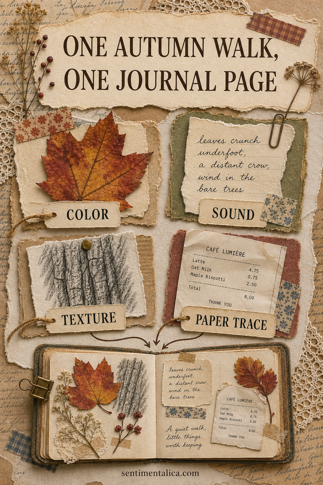
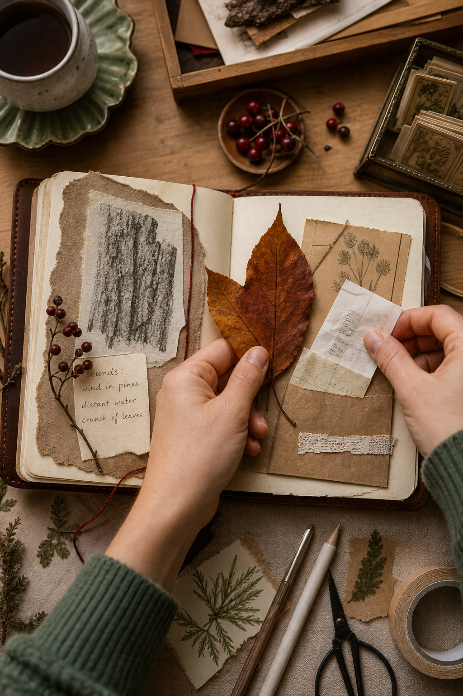
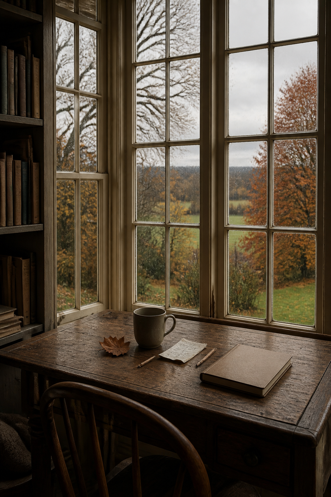

An autumn junk journal page does not need pumpkins, orange plaid, or a perfect basket of leaves. A ten-minute walk around your own block can give you a more personal palette and a better story. Bring home four kinds of evidence: one color, one sound, one texture, and one paper trace.

Collect a color that is not obvious
Instead of choosing the brightest leaf, notice the smaller seasonal colors: plum on a wet pavement, olive moss, the blue gray of an early sky, or the dull gold of grass. Take a photograph or write the color down. This one observation can become the page's main visual thread.
When you return, choose one neutral that supports it. Plum works with cream, olive with faded black, and dull gold with weathered brown. You now have a palette rooted in a real place rather than a generic autumn scheme.
Write down the sound before it disappears
A bus moving through rain, dry leaves against a wall, a gate closing, birds gathering, or shoes on gravel can anchor the page in time. Write the sound as a short line rather than an explanation: “Leaves scrape along the curb.” “One bird keeps answering another.”
Use that line as a title, tuck it inside a pocket, or write it vertically along the edge. A sensory phrase gives even a simple collage a reason to exist.
Borrow one texture without damaging anything
Make a rubbing from bark, brick, a drain cover, or a wooden bench using scrap paper and a soft pencil. You can also photograph a texture and imitate its marks later with ink. Leave plants and private property where they are. The point is to record the surface, not remove it.

Tear a small piece from the rubbing and use it beneath the main color. The irregular graphite pattern often provides exactly the worn contrast that a clean printed image needs.
Find one paper trace of the day
A café receipt, bus ticket, grocery label, appointment slip, or discarded packaging from your own bag can carry date, place, and typography at once. Keep only what is safe and clean. If nothing appears, write the street name and date on a narrow piece of paper.

Assemble the page in four quiet layers
- Use a neutral page or a sheet with very faint text as the base.
- Add the paper trace slightly away from the center.
- Place the color image or leaf shape so it overlaps one edge.
- Finish with the texture rubbing and your remembered sound.
Leave one part of the page open. Autumn already carries visual richness, so the composition benefits from a pale margin or an empty corner. If the page feels too busy, remove a decorative item before removing any of the four pieces of evidence. The evidence is what makes the page yours.
Try the same walk later in the season
Repeat the route in two weeks and collect the same four categories. The change may be subtle: a darker sky, quieter birds, bare branches, or a different receipt in your pocket. Two pages made from the same place can show time passing without a single staged photograph.
If you want a floral focal point without turning the page into a conventional autumn collage, choose a muted bloom from the 100 free floral pictures. Pair it with the real color from your walk and keep everything else simple. You can find more observation-based prompts in the Sentimentalica journal.